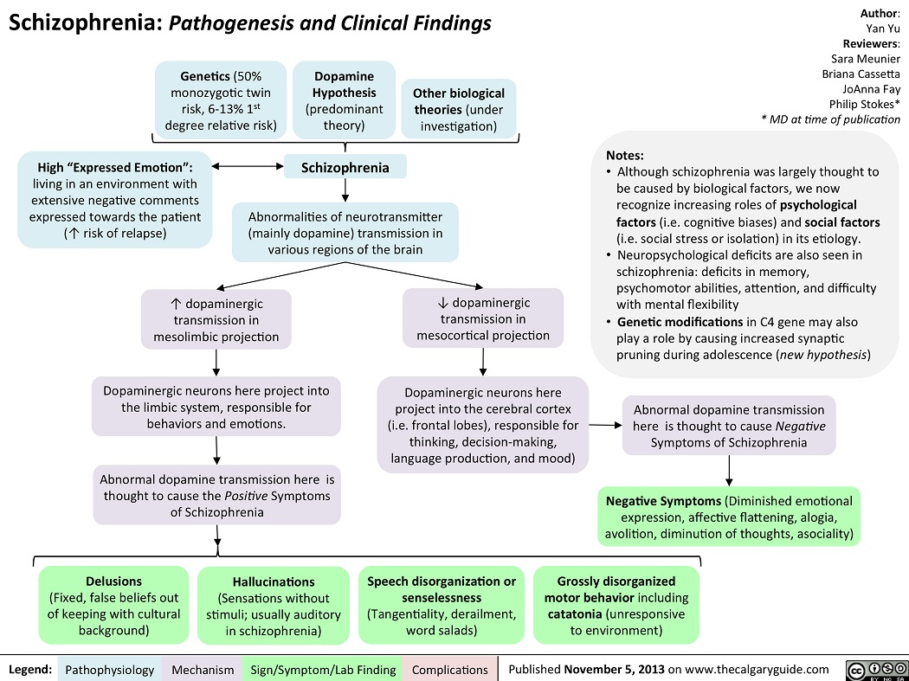
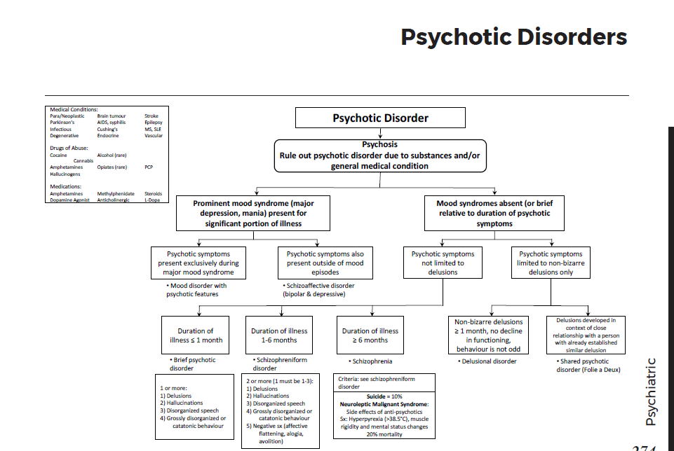
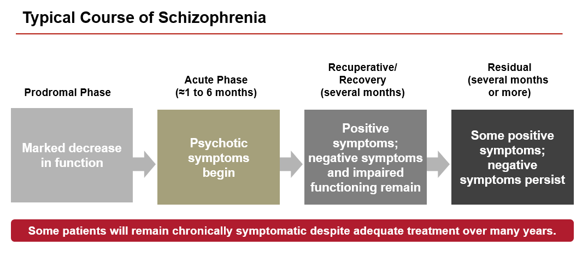
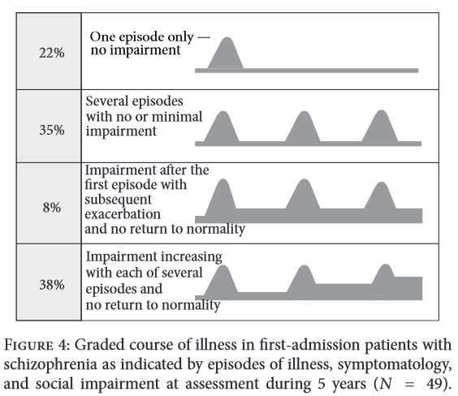
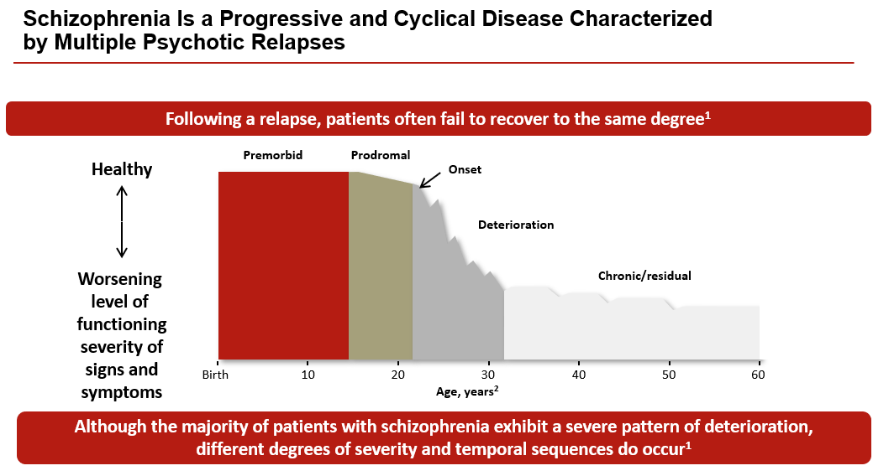

Chapter 7: The patient who is psychotic
Screening, assessment and diagnosis
What is expected of a primary care clinician?
When to refer to a specialist?
Treatment: Non-Pharmacological
Self directed learning material
Primary care is often the point of first contact for patients with psychotic symptoms, and the first contact during a relapse or crisis. Identifying and treating schizophrenia and related psychotic disorders is crucial because they are linked to increased morbidity and mortality. This results from the constellation of psychiatric symptoms and co-morbid somatic illnesses, including diabetes mellitus, obesity, metabolic syndrome, hypertension, and cardiovascular and pulmonary disease.
These conditions are related to various factors:
- disease-related (e.g., impact of symptoms on help-seeking behaviour)
- lifestyle (e.g., increased rates of smoking, poor diet and inactivity)
- effects of antipsychotic treatment
- reduced access to primary medical care
Primary care providers play a role as part of a multidisciplinary care team and often provide follow-up care once patients are no longer in regular contact with specialist. services.
Pathogenesis

Screening, assessment and diagnosis
- Gentle introduction
- ‘I would like to ask you some questions that might seem a little bit strange. These are questions that we ask to everyone who come to see us.’
- Quick screening questions
- Have you had a waking dream like experience?
- Have you had strange experiences?
- Do you hear of see things that other people can't hear or see?
- Do you ever feel that people are bothering you or trying to harm you?
- Do you feel that strangers look at you or make comments about you?
Answering "yes" to any of these questions indicates the need for a more detailed assessment with a specialist. In addition, it is always important to obtain corroborating information from caregivers or others close to the patient.
Detailed assessment of a patient with suspected psychosis is listed here.
Differential diagnosis

- Organic conditions
- Many medical illnesses can cause psychotic symptoms, but they generally have other symptoms and signs associated with the primary disease.
- For first presentations of psychosis, a physical examination that includes a neurological examination, general medical history and review of symptoms should be conducted. Unless otherwise indicated by the history or physical examination, screening blood tests should include complete blood count, blood chemistry including electrolytes, liver function tests and a thyroid-stimulating hormone test.
- For these first-time patients, a CT or MRI is recommended to rule out structural brain abnormalities.
- Some organic conditions and substances that can present with psychosis are shown in the figure above.
- Specific psychotic disorder
- Schizophrenia
- Core symptoms - Any 2 out of 5
- Delusion
- Hallucination
- Disorganized speech
- Disorganized behaviour
- Negative symptoms
- for at-least 1 month
- at-least 1 symptom from 1-3
- Duration - total illness duration more than 6 months
- Distress - Impaired function or needing hospitalization
- Differentials
- Substance
- Organic condition
- Other psychiatric conditions
- Brief psychotic disorder
- Brief psychotic disorder is characterized by psychotic symptoms lasting at least one day but less than one month.
- Schizophreniform disorder
- Schizophreniform disorder is characterized by symptoms of schizophrenia that last at least one month but less than six months.
- Delusional disorder
- Delusional disorder is characterized by non-bizarre delusions and the absence of other characteristic symptoms of schizophrenia (e.g., hallucinations, negative symptoms, disorganized speech or behaviour).
- Schizoaffective disorder
- Schizoaffective disorder is characterized by a mood episode that is concurrent with psychotic symptoms of schizophrenia, where the mood symptoms are present for a substantial portion of the total duration of the disturbance, and psychotic symptoms must also be present for at least two weeks in the absence of prominent mood symptoms.
- Other psychiatric conditions that can present with symptoms of psychosis
- Mood disorder with psychotic features (depression or mania). Mood disorder with psychotic features can be differentiated from schizophrenia by the exclusive appearance of psychotic symptoms during periods of mood disturbance.
- Psychotic like experiences in PTSD
- Micro-psychotic episodes in Borderline personality disorder
- Schizotypal personality disorder
- Catatonia specifier
- Schizophrenia subtypes



What is expected of a primary care clinician?
- Diagnose and carry out initial screening for underlying medical illnesses.
- Assess suicide risk.
- Monitor treatment response and symptom severity.
- Monitor extrapyramidal symptoms.
- Monitor metabolic and cardiovascular risk factors for all patients prescribed antipsychotic medication, particularly SGAs, regardless of which physician is prescribing antipsychotic medications.
- Manage co-morbid somatic illnesses.
- Refer when necessary.
When to refer to a specialist?
- First presentation of psychotic symptoms
- Diagnostic clarification and treatment
- Severe presentation (safety risks to self or others, serious functional impairment, co-morbid medical or substance use issues)
- Refractory to standard treatment (two or more medication trials)
- Acute decompensation
- Persistent negative symptoms
- When considering the use of clozapine or ECT
Treatment: Pharmacological
Acute treatment
The goals for acute treatment of a patient presenting with psychosis include:
- diagnostic assessment
- assessing the potential for danger to self or others
- engaging the patient and caregivers in the treatment process, including a discussion about risks and benefits of treatment
- initiating pharmacologic treatment as soon as possible
Usually there is not one definite choice of medication for any given patient, since there is much individual variability in efficacy and side-effects. The choice is based primarily on individual profiles of efficacy and tolerability. Following factors are considered when choosing an antipsychotic medication:
- There is emerging evidence that SGAs and FGAs may be equally effective in treating schizophrenia or schizoaffective disorder.
- Second-generation antipsychotic medications (SGAs) are preferred as first-choice treatments, especially for previously unmedicated patients who are particularly sensitive to acute extrapyramidal and sedative side-effects caused by antipsychotics.
- The SGAs, including olanzapine, risperidone, quetiapine, ziprasidone and aripiprazole, offer improved tolerability, particularly with regard to extrapyramidal symptoms, compared with first-generation antipsychotics (FGAs).
- All antipsychotics carry a risk of extrapyramidal symptoms and tardive dyskinesia, although the risk appears to be higher with FGAs compared to SGAs. Of the SGAs, the risk of extrapyramidal symptoms seems to be highest with risperidone.
- All antipsychotics carry a risk of weight gain and metabolic abnormalities, although the risk appears to be higher with SGAs, particularly olanzapine, quetiapine and clozapine.
- Risperidone is the SGA most commonly associated with elevated prolactin levels and subsequent amenorrhea and sexual dysfunction.
- Ziprasidone carries a potential risk of QTc prolongation, and as such is contraindicated in patients with a prolonged QTc interval.
- Clozapine appears to be a unique SGA that exhibits superiority in treating treatment-resistant patients with schizophrenia or schizoaffective disorder (patients who have not benefited from previous trials of two antipsychotics). Clozapine treatment carries a risk of agranulocytosis, which requires regular monitoring of white blood cell and neutrophil counts (weekly for the first six months, biweekly for the next six months, monthly thereafter). The risk is approximately 0.5 to two per cent, and appears to be greatest in the early stages of treatment initiation.
- For schizoaffective disorder, treatment typically combines an antipsychotic with a medication aimed at treating the mood disturbance.
⚠️ |
Monitor metabolic and cardiovascular risk factors for all patients prescribed antipsychotic medication. |
Maintenance treatment
The goals for maintenance treatment of schizophrenia or schizoaffective disorder are:
- improvement in functional recovery
- prevention of relapse and recurrence
- treatment adherence
Following treatment of a first episode of psychosis, with symptom remission and functional recovery while on medications for approximately two years, consider a trial of no medications. However, which patients can safely and permanently discontinue antipsychotic medications cannot be predicted. Medication should be withdrawn gradually over six to 12 months, and symptoms and functioning monitored closely.
Relapse rates are estimated at 60 per cent or higher over two years. Of patients with a first episode of psychosis, 80 per cent are at risk of a second episode within the first three to five years, with recovery from subsequent episodes being slower and often less complete. Following a second psychotic episode, it becomes highly unlikely that patients will remain relapse-free if they go off antipsychotic medication.
Treatment: Non-Pharmacological
Psychotherapy and psychosocial interventions: are an important component of treatment for patients with schizophrenia and schizoaffective disorder. They are typically administered through local speciality psychiatric services. These approaches include:
- Cognitive-behavioural therapy (CBT): Particularly useful for treatment-resistant patients with persistent positive or negative symptoms.
- Family interventions: Include family psychoeducation, multiple-family groups (particularly early in the course of the illness), and evaluating and addressing caregiver burden.
- Employment and academic interventions: Include supported employment and academic accommodations through student services at secondary and post-secondary institutions
- Social skills and life skills training: Teach independent living skills to help people with schizophrenia function in their communities.
Psychoeducation: helps people with schizophrenia to understand and cope with their illness. It is linked to reduced relapse and readmission rates, improved medication adherence and better quality of life. It should be an ongoing process with patients and their families. Psychoeducation can deliver the following simple messages to improve medication adherence:
- Antipsychotics can take a couple of weeks to start working.
- Take the medications every day.
- Side-effects are usually mild and improve over time.
- Continue your medications, even after you feel better, or your symptoms may return.
- Do not stop antipsychotic medication before checking with your doctor.
- Alcohol and recreational drugs can affect how well the medication works.
Take a self-management approach with patients:
- Always include patient education (e.g., patient information handouts)
- Involve patients, and their families when appropriate, in the management of their own illness by actively collaborating with them in the diagnosis and treatment planning.
Self directed learning material for psychosis
1. The causes of psychosis
2. Psychosis and cannabis
3. Psychosis and genetics
4. Psychosis and stress
5. Psychiatric interview for teaching psychosis
6. ADMSEP module of psychosis - link
Bibliography
1. Portico network - Psychiatry in Primary Care Toolkit
2. Black Book - University of Calgary
4. Synopsis of Psychiatry 11e.
5. Gulati, Gautam; Cullen, Walter; Kelly, Brendan. Psychiatry Algorithms for Primary Care (p. 32). Wiley. Kindle Edition.
6. thecalgaryguide.com
7. ADMSEP modules
8. University of Nottinhgam teaching videos
9. https://www.researchgate.net/publication/283480867_The_concept_of_schizophrenia
10. https://institute.progress.im/en/content/course-natural-history-and-prognosis-2
Created with the Personal Edition of HelpNDoc: Full-featured multi-format Help generator